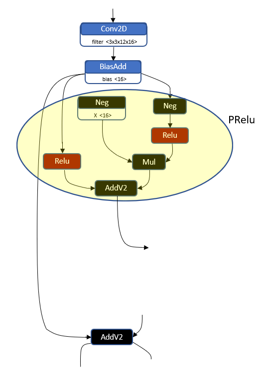
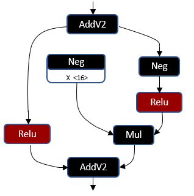
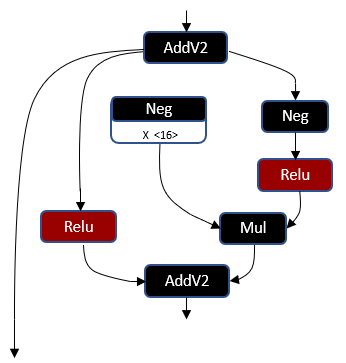

Quantized 16 bit activations (A16) vs FP16 and Activation Fusion: Performance and power differences¶
As mentioned previously in the document: Recommendations for Network Design, quantized A16 bit activations generally achieve higher performance and have lower power requirements. In order to get most benefit from using 16 bit activations, it is critical to maximize utilization of the hardware. We recommend that the network is designed to take maximum advantage of HMX. Some of these practices are outlined below with examples.
Minimize data movement operations¶
Non computational operations that move or permute data in some way are expected to have similar performance on FP16 vs A16, as the data size is the same. If a network is heavily dominated by these operations then one might not see a very significant inf/sec gains and power benefits using A16 activations compared to FP16 ones.
- These operations include (but are not limited to):
Reshape
Transpose
Depth to Space
Space to Depth
Concat
Therefore, it is recommended to avoid these operations whenever it is feasible, and to consider approaches which minimize usage of data movers.
Activation Fusion¶
The latest hardware can fuse some non-trivial activation functions (i.e, non-Relu) into the previous convolution. We currently support fusing PRelu and HardSwish in all precisions, namely, A8, A16 and FP16. For A8 and A16 precisions, Relu and ReluMinMax activations have better performance. For FP16 precisions, Relu activations have better performance. Many of the networks provided in A16 make heavy use of PRelu, which will benefit from this added support. However, there are some caveats, such as below and the networks should be designed to make the best use of this feature.:
There is a constraint that the conv preceding the activation should not be used
elsewhere in the network in order for the Activation Fusion to take place.
Note
Note that simple activation functions like Relu are not subject to the above constraint, so we still recommend usage of Relu over PRelu/HardSwish whenever this can be achieved.
The following table shows the support for various activation fusions with the preceding Conv2D or DepthWiseConv2D:
Activation |
Op Fusion for A8 and A16 |
Efficiency for A8 and A16 precisions |
Op Fusion for FP16 precision |
Op Efficiency for FP16 precision |
|---|---|---|---|---|
Relu |
Yes |
best |
Yes |
Best |
ReluMinMax |
Yes |
best |
Support on 8550 and 8650 |
Good |
HardSwish |
Support on 8550 and 8650 |
best |
Support on 8550 and 8650 |
Good |
LeakyRelu |
Support on 8550 and 8650 |
best |
Support on 8550 and 8650 |
Good |
Prelu |
Support on 8550 and 8650 |
best |
Support on 8550 and 8650 |
Good |
Elu |
No |
N/A |
No |
N/A |
Gelu |
No |
N/A |
No |
N/A |
Sigmoid |
No |
N/A |
No |
N/A |
Tanh |
No |
N/A |
No |
N/A |
Example: Network Topology¶
When fusing an activation, if the results of the preceding convolution are needed elsewhere in the network, then the activation fusion is not done, as we would need to do the convolution twice. This type of pattern is quite common in many networks and prevents activation fusion.

Figure 1
From the Fig. 1, one can see that the results of the convolution are fed to a PRelu (highlighted in yellow), and to an Add (the bottom AddV2), which prevents activation fusion. It is therefore recommended to optimize the network topology so that activation fusion is always possible.
Example: Replacing Add with Convolution to Maximize Activation Fusion¶
Current activation fusion is supported for only convolution type ops. It does not apply to other ops such as Add or Mul. If these types of ops are followed by a non-trivial activation, it may be beneficial to replace these elementwise ops with convolution, which will allow the activation functions to be fused into the convolution. For example in the Fig. 2, the first Add can be replaced with a convolution which would allow the following PRelu to be fused with the convolution. However, we still have the restriction that the output of the replaced Add can not be used in another place. So some patterns like the one shown in Fig. 3 may not be fused.

Figure 2

Figure 3